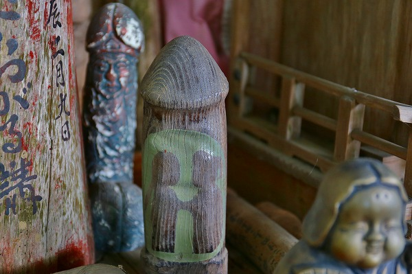

宮城県多賀城市。
かつて陸奥国の国府があった歴史の古い町である。
その国府跡にもほど近い場所に
陸奥総社宮という神社がある。
かつては国府に赴任した国司が陸奥国の主要神社を参拝することとなっていたが、それを簡略化して一か所に集めたのがこの陸奥総社宮なのだ。
つまり
陸奥国の神様が大集合しているオールスター神社、といえよう。
やけに石が積まれた狛犬。
参道脇には合祀されている神社の名前がズラリと並んでいる。
全部で百座ちょうど。
これらの神様が合祀されて一堂に会しているのだ。
境内には安産を祈願する枕も。
安産を祈願する妊婦は枕を一つ持ち帰り、願を掛け、無事出産したらお礼に借りてきた枕ともう一つ別の枕を奉納することになっている。
その割に枕の数が多くないのは、あまり祈願者が来ない、という事なのかな？
拝殿も絵馬はいくつかあったが、参拝者が多く訪れる神社、という風ではない。
むしろ時たま近所の爺さんが散歩で訪れる程度である。
それも仕方あるまい。そもそもここは権力者の都合で各地方の神様を合祀した
人為的な神社なのだ。
そこには本来神社が持っている土地に根付いた由来といったものがないのだ。
国司が参拝するためだけの神社なのだから庶民の信仰心もほどほどなのだろう。
歴史はあるけど謂れはない、何というか色々なものが上滑りしている印象の神社だなー。
…と思いつつ本殿の脇のエリアに足を進めると…
おっとお！
何だこりゃあ！
それまでの妙にすっきりして疎な空間とは一転して
情報量のやけに多い感じに。
小さな社が密集して、その前には縁起物全般が散乱、じゃなくて奉納されている。
お稲荷さんの狐や七福神なども。
先ほどの本殿付近とは明らかに空気が違うぞ。
何か、
土着的なグルーブが流れている。
特筆すべきは大量に並んだ
陶製の社。
社は屋根と本体部分がセパレート式になっており、中に何か納められるようになっている。
…別に何も入ってませんでしたけど…
シャチホコ付きの屋根もあった。
最初見たときは要らなくなった祠や社を引き取って置いてあるのか、とも思ったのだが、もしかしたらそうではないのかもしれない。
先ほど申し上げたようにこの神社は百の神社を合祀した神社である。
この
陶製の社ひとつひとつがその百座の神社を表しているのではなかろうか？
正確な数は数えなかったが数としては100程度だったように思う。
陸奥国各地の神社を形だけ合祀した「お役所仕事」的な神社だと思ったが…
実は一柱一柱の神様へのリスペクトを示すためにこのように小さな社を並べて祀ったのでないか。
だとすれば先ほど本殿で受けた淡白な印象はガラッと変わってくる。
…上滑りしてるとか寂れてるとか（そこまでは言ってない！）言ってスミマセンでした…。
中には石の社も。
元々このような石の社がメインだったのだろうか。
66キロの駅伝とかやるんだ。すげえな。
さて、と。
申し訳ないが、
まだまだ話は続きま〜す！
この陸奥国総社宮からほど近いところに
荒脛巾（アラハバキ）神社という神社があるらしいので見に行ってみた。
総社宮から歩いて数分。
こんな光景が。
うむー。
鳥居はあるものの、どうみても人の家じゃないか。
恐る恐るお邪魔しますよ…
って、ほらー。やっぱ人ん家じゃん。
と思ったらその片隅に社らしきものが見える。
おお、こちらが荒脛巾神社ですか。
お参りさせていただきますよ。
ほっほほ〜っ！
この混沌とした感じは正直いってかなりお好みの風景だ。
小さな社を覆うようにトタンの屋根がかけてある。
その社の前には靴や千羽鶴や布やその他色々なものがぶら下がっている。
説明板によればこの荒脛巾神社、
足の神様なのだという。
脛巾、というのはスネに巻き付ける布の事で脚絆の原型にあたるものだ。
そこから旅人の安全を守る神様となり、転じて腰から下の神様となったという。
柱にぶら下がっている大量の靴や草履。
中にはスリッパも。
同じ人が奉納したのだろうか。
足絵馬もあった。
腰から下、ということで歩行補助の装具も。
他にもスケートシューズもあった。
こうしてすっかりローカルな足の神様として定着している荒脛巾神社だが、実は
そんなに簡単な神様ではないのだ。
この荒脛巾という神様は大和朝廷が東日本を制圧する以前に
蝦夷に信仰されていた神様と言われている。
詳しく述べ始めるとここでは終わらなくなるので超簡単に説明すると調べれば調べるほど謎な神様である、というざっくりとした結論だけ述べておく。
ただしその信仰圏は決してローカルなものではなく東日本から関西にまでその痕跡が散見できるのだ。
社の片隅には遮光器土偶のレプリカも奉納されていた。
東日流外三群誌の影響もあって（知らない人は自分で調べて！）アラハバキ神＝遮光器土偶というイメージが定着しているからと思われる。
定まらぬ歴史的評価の上に様々な人の思い入れだけが堆積しているような所だった。
こういう庶民信仰のその場その場の積み重ねが本来の信仰をどんどん違う方向に変節させていくのだろう。ここはその見本会場なのかもしれない。
荒脛巾神社の右隣には
養蚕神社がある。
こちらは病の根を切る、という事で
ハサミが奉納されている。
ハサミ、といえばどうしても人間同士の縁切りを想像してしまいがちだが、ここはあくまでも病除けの祈願らしい。
カゴの中にまとめてハサミが奉納してあった。

ハサミ絵馬も。
さらに荒脛巾神社の左側には
太子堂がある。
太子堂とは言うものの、現状はこんな感じ。

男根がたくさん奉納されとりました。

太子信仰と男根信仰は本来あまり関連性がないと思うのだが、そもそもアラハバキ信仰が足の神様にトランスレートされてるんだから、何でもアリでしょ。
荒脛巾神社に収まり切れなかった靴や草履が奉納されていた。
その隣には地蔵堂も。
これにて荒脛巾神社訪問は終了。
思いの外
濃密な信仰空間であった。
この神社自体が近くの塩釜神社の末社であり、伊達家も社領を寄進していることから、かつては今よりは大規模な神社であったと想像できる。
それが失礼ながら民家の庭先にあること自体、歴史的に何らかの変節点があったはずであるが、その経緯は判らず仕舞いであった。
帰りがけに見かけた
多賀神社。
延喜式内社の神社という説明書きがあったが、実際には小さな小さな社が一棟だけポツンと建っていた。
気になったのは壁に掛けられた木の輪っか。
これは箍（たが）だという。
箍とは桶や樽が開かないように締めるアレである。
これを年の数だけ連ねて奉納するのだという。
その目的は判らないが、恐らく
「多賀＝箍」というダジャレなのだろう。
以上、現場の多賀城市からお伝えしました。
何となく全体的に
歴史と現状が一致しない感じが印象的でした。